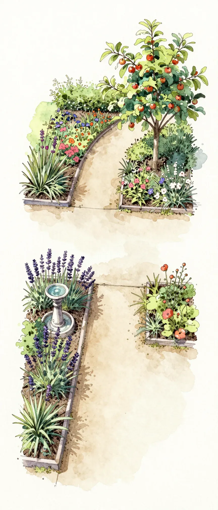
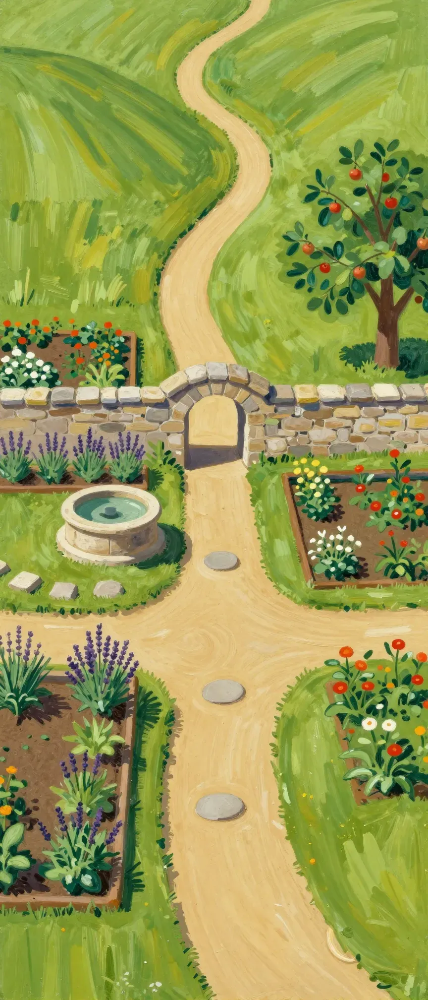
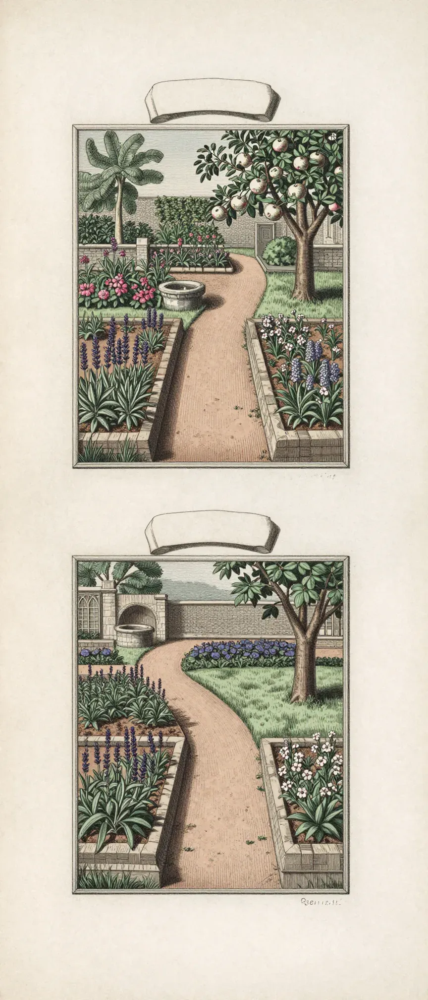

Welches Gerüst passt zu welchem Stil?
Je Stil ein eigenes Gerüst mit zwei Bereichen übereinander, zum Scrollen in Handybreite. Es sind KI-Proben, keine fertigen Grafiken. Fest bleibt: lang, von unten nach oben, schräg von oben, Stationen auf dem Weg. Frei war diesmal, wie Bereiche aneinandergrenzen, wie Stationen aussehen und woran man Fortschritt sieht.
Jeder Bereich ist ein gemalter Fleck auf weißem Papier, der Weg verbindet sie. Fortschritt könnte die Farbe selbst zeigen: unbearbeitet nur Tusche, mit jeder Station mehr Farbe.

Der Regler nimmt die Farbe aus demselben Bild heraus, ohne neues KI-Bild. Ein eigenes KI-Bild „nur Tusche“ wurde heute ein flacher Grundriss und passte nicht.
Der Weg führt durch Hügel und Terrassen, eine Mauer mit Bogen trennt die Bereiche, flache Steine im Weg sind die Stationen.

„Frisch angelegt“ ist ein eigenes KI-Bild und zeigt einen anderen Garten. Damit es derselbe Ort bleibt, bräuchte man später eine Bildbearbeitung statt eines neuen Bildes.
Noch nicht gelungen: In beiden Versuchen ist der Blick zu flach, es gibt Himmel, der Weg reißt zwischen den Tafeln ab, und unten steht Scheinschrift. Erkennbar ist nur die Idee.
Idee: Jeder Bereich ist eine Tafel in einem alten Buch, mit leerem Schriftband für den Namen. Unbearbeitet wäre der Stich schwarz-weiß, bearbeitet koloriert.

Z-Image-Turbo (Tongyi-MAI, Lizenz Apache 2.0) über den Hugging-Face-Space mcp-tools/Z-Image-Turbo, 26.11.2026, 864 × 2016 Pixel, 8 Schritte, Seed 42, unverändert. Der Regler bei A rechnet die Farbe im Browser heraus. Eingaben:
A: High-angle three-quarter view from above at about 45 degrees, looking down onto the ground, no sky, no horizon. Loose watercolor and ink illustration on a tall sheet of white watercolor paper, soft washes, fine dark ink lines. Two painted garden areas lie one above the other on the sheet; around and between them the bare white paper shows, and each area fades softly into the white paper at its edges. One continuous narrow sandy footpath winds in S-curves from the bottom edge up through the lower area, across the white gap, and on through the upper area to the top edge. Lower area: herb beds with lavender and a small round fountain beside the path. Upper area: flower beds and an apple tree beside the path. Tall vertical composition, calm, uncluttered, no people, no animals, no text.
B, bewachsen: High-angle three-quarter view from above at about 45 degrees, looking down onto a monastery garden on gentle green hills; the ground fills the whole picture edge to edge, no sky, no horizon. Opaque gouache storybook illustration, thick matte paint, visible broad brush strokes, rich warm colors, simplified shapes, no outlines. One continuous sandy footpath winds in wide S-curves from the bottom edge to the top edge. Halfway up, a low stone wall with a small archway crosses the picture and divides the garden into a lower and an upper terrace; the path passes through the archway. Round flat stepping stones lie in the path at even distances. Lower terrace: herb beds with lavender and a round stone fountain beside the path. Upper terrace: flower beds and an apple tree beside the path. Garden elements are spread over the whole height of the picture. Tall vertical composition, calm, uncluttered, no people, no animals, no text.
B, frisch angelegt: wie B, dazu: The garden has just been laid out and is not yet planted. Lower terrace: empty beds with bare brown soil and a few tiny seedlings, a dry round stone fountain without water beside the path. Upper terrace: empty beds with bare soil and one thin young sapling tied to a stake beside the path. Plain short grass, no flowers, no shrubs.
D, Versuch 1: Antique hand-colored copperplate engraving from an old herbal book, fine hatching, muted transparent tints on aged cream parchment. A tall parchment page showing two garden plates stacked one above the other, each plate a framed rectangular picture with a blank ribbon cartouche above it. Inside the plates a monastery garden is seen from a high three-quarter angle at about 45 degrees, looking down, no sky, no horizon. One winding footpath runs from the bottom edge of the page up through the lower plate, through the gap between the plates, and on through the upper plate to the top edge. Lower plate: herb beds with precisely drawn lavender and sage and a stone well beside the path. Upper plate: flower beds and an apple tree beside the path. Tall vertical composition, no people, no animals, no text, no lettering, empty cartouches.
D, Versuch 2: wie Versuch 1, aber: Each plate shows the ground of a monastery garden from high above at about 45 degrees, looking down; the ground fills each plate completely, no sky, no horizon, no wall at the back. The path crosses the parchment between the plates as a fine engraved line.